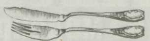
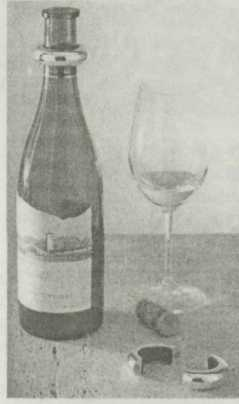

Рыбный этикет
 За столом
Жареную рыбу можно есть даже двумя вилками
За столом
Жареную рыбу можно есть даже двумя вилками
Существует заблуждение, что рыбу нельзя есть с помощью ножа. Однако это не всегда так.
Пластинки вкусной деликатесной рыбы (лососины, севрюги, осетрины) как раз и разрезают закусочным ножом.
Бутерброды с соленой рыбой тоже рекомендуют резать на небольшие кусочки, чтобы не испачкать пальцы.
Горячие рыбные блюда едят всегда только с помощью ножа или вилки. Желательно, конечно, чтобы нож был специальный рыбный, но он редко бывает в наличии у нас дома, поэтому можно обойтись и двумя вилками: причем, одна из них возьмет на себя функции ножа. Ею вы будете аккуратно придерживать порцию рыбы на тарелке, а другой вилкой отделять косточки и маленькие ломтики рыбы. Можно есть и одной вилкой, придерживая порцию рыбы на тарелке небольшим кусочком черного или белого хлеба. Оба варианта не возбраняются этикетом.
Рыбу горячего копчения и отварную едят без ножа только двумя вилками. Копченую рыбу сначала аккуратно очищают от кожицы одной вилкой, затем съедают половину, снимают кость, переворачивают рыбу на другую сторону, снова снимают кожицу и доедают.
Рыбные нож и вилка необходимы при сервировке стола, если на обед поданы рыбные блюда. При отсутствии специальных приборов для рыбы пользуются двумя вилками. Нож и вилка для рыбы несколько меньше столовых. Нож для рыбы тупой, похож на удлиненную лопатку, а вилка имеет четыре укороченных и широких рожка.

• Вино в бокалы не наливают доверху, а лишь наполовину, или не доливая на 2 см до верхнего края.
• Вино должно быть нужной температуры: шампанское и шипучие вина — 6-8 град., белое вино — 12 град., красное — 16-18 град., сухое вино подают прежде сладкого, слабое вино — перед крепким, дешевое — перед дорогим и изысканным.
• Чтобы вкус красного вина был лучше, оно должно постоять при комнатной температуре не менее 1 часа без пробки.
• Вино — изысканный напиток, который хорош в правильном сочетании с определенными блюдами. К рыбе подходит белое вино. К более тонким и нежным по своему вкусу блюдам следует подавать мягкие вина, к пикантным — более резкие. Белое сухое или розовое вино можно подать к закускам, легкой еде из рыбы, отварным ракам. Белые вина, так же, как и красные, бывают сухие (без сахара) и полусухие (с небольшим процентом сахара). Сухой шерри подают к жирным сортам рыбы. К крабам предпочтительнее подать сухое белое вино.
• К супам обычно алкогольные напитки не подают — только минеральную воду, хотя в некоторых странах к рыбному бульону может идти сухое вино.
• Водку и виски подают к жирным, соленым, пряным блюдам.
• Пиво — к соленой рыбе. Никогда вино не предлагают к соленой или копченой рыбе.
